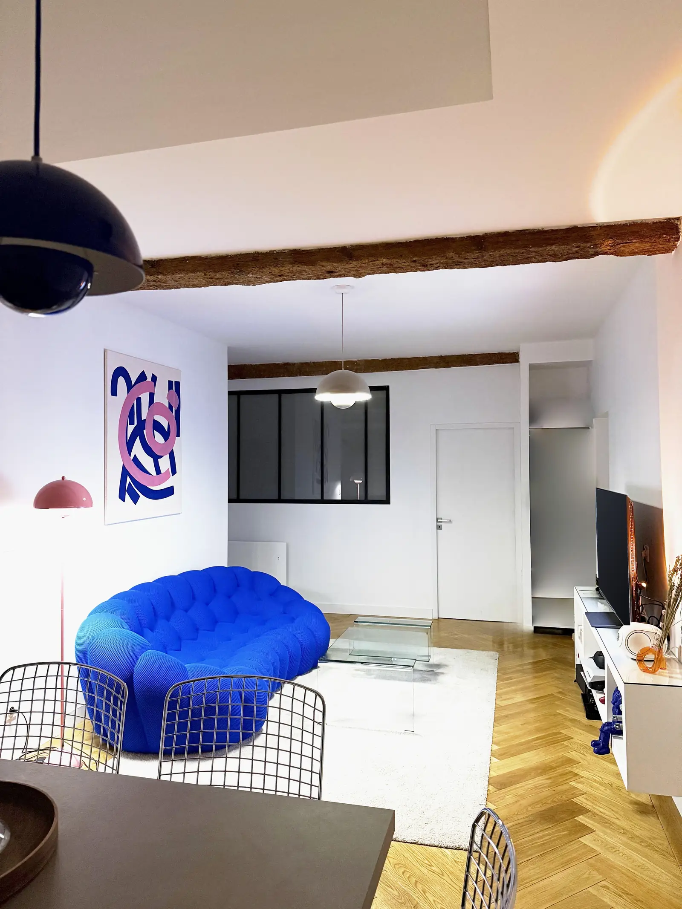

Chantier terminé · Peinture et sols
Un séjour rénové, des murs au parquet
- Murs et plafonds repeints en blanc, avec des finitions nettes autour des poutres apparentes conservées
- Parquet posé en bâtons rompus, qui réchauffe toute la pièce
- Une seule équipe, de la préparation des supports aux dernières finitions
Nous avons enchaîné les travaux dans le bon ordre : préparation et peinture des murs et des plafonds d'abord, pose du parquet ensuite, pour un résultat propre et sans reprise.
Photo : chantier réalisé par notre équipe.